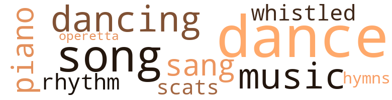
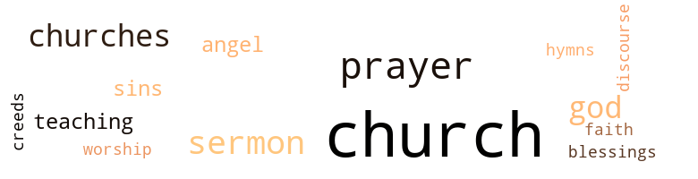

Aggie, by Humphrey, Lillie Muse (1955)
29 music-related terms matched in this text.
Most frequent terms in this topic: dance (6); song (3); dances (3); dancing (3); music (3)
dance.n.01
Definition: an artistic form of nonverbal communication
| word | sentence |
|---|---|
| dances | They went to movies , to dinner , to dances , and on sightseeing tours . |
| dance | She tried to take a nap before it was time for her to dress and go to the seniors ' dance . |
| dances | The physical education teachers had agreed to help the elementary teachers with the dances . |
| dances | After she found that the teachers were deliberately keeping the children away , she taught enough dances to her class to compensate for the rest of the pupils . |
| dance | Wendell and Thomas will be here in a little while to take us to the dance . |
| dance | During intermission , Aggie and Wendell walked out behind the gymnasium , where they usually went whenever they attended a dance together . |
| dance | They enjoyed the last part of the dance . |
dance.v.03
Definition: skip, leap, or move up and down or sideways
| word | sentence |
|---|---|
| dance | Their posture seemed improved since the parents allowed the teachers to show them how to exercise and dance . |
| dancing | Dressed in her pretty formal , dancing with him and the other young men in her class , she thought that she would be gay ; but she kept hearing the dean 's words , over and over again . |
| dance | He also told his audience that each year a flock of educated fools came to the community to teach the children to dance , to play baseball , football , basketball , which lead the children to juke joints . |
| dancing | Several high school pupils were dancing near the jukebox . |
| dancing | He said , too , " The teachers teach dancing to aid your child 's body development . |
hymn.n.01
Definition: a song of praise (to God or to a saint or to a nation)
| word | sentence |
|---|---|
| hymns | At one o'clock one of the deacons came into the church and started the prayer services , which consisted of two old hymns and two prayers offered by two men in the audience . |
music.n.01
Definition: an artistic form of auditory communication incorporating instrumental or vocal tones in a structured and continuous manner
| word | sentence |
|---|---|
| music | As a result of the training received in their music classes , the children seemed to have a better sense of rhythm , and they pronounced the words in songs more distinctly . |
| music | In the city school there were special teachers to teach music , art , physical education , and the exceptional children . |
| music | The music stopped , and the high school pupils went out into the street . |
operetta.n.01
Definition: a short amusing opera
| word | sentence |
|---|---|
| operetta | Aggie 's class had to present the annual operetta . |
piano.n.01
Definition: a keyboard instrument that is played by depressing keys that cause hammers to strike tuned strings and produce sounds
| word | sentence |
|---|---|
| piano | On the inside , there were three rows of straight benches , a little table , some wire-grass baskets for collections , a small lectern and Bible for the minister , a chair behind the lectern , an old weather-beaten piano , and some benches on the choir stand for its members . |
| piano | One member played a march on the piano , and the members marched to their classes in different sections of the church . |
rhythm.n.04
Definition: the arrangement of spoken words alternating stressed and unstressed elements
| word | sentence |
|---|---|
| rhythm | As a result of the training received in their music classes , the children seemed to have a better sense of rhythm , and they pronounced the words in songs more distinctly . |
scat.n.01
Definition: singing jazz; the singer substitutes nonsense syllables for the words of the song and tries to sound like a musical instrument
| word | sentence |
|---|---|
| scats | About eleven o'clock , the members marched back to their original scats in front of the church . |
sing.v.02
Definition: produce tones with the voice
| word | sentence |
|---|---|
| sang | With the ushers back in their places , the choir sang four songs . |
| sang | The pupils and the teachers sang a song , and the principal said a prayer . |
song.n.01
Definition: a short musical composition with words
| word | sentence |
|---|---|
| songs | As a result of the training received in their music classes , the children seemed to have a better sense of rhythm , and they pronounced the words in songs more distinctly . |
| song | When the last song was played by the orchestra , Wendell walked with Aggie to the dormitory . |
| song | The superintendent led the devotional exercises which included a song and a prayer . |
| songs | With the ushers back in their places , the choir sang four songs . |
| song | The pupils and the teachers sang a song , and the principal said a prayer . |
whistle.v.01
Definition: make whistling sounds
| word | sentence |
|---|---|
| whistled | They followed her , whistled as she passed , and asked her for dates . |
63 violence-related terms matched in this text.
Most frequent terms in this topic: hurt (7); fight (6); hate (6); killed (5); fighting (4)
anger.n.01
Definition: a strong emotion; a feeling that is oriented toward some real or supposed grievance
| word | sentence |
|---|---|
| anger | Aggie listened , but she decided that she would not say anything to anger this woman . |
anger.v.02
Definition: become angry
| word | sentence |
|---|---|
| angered | The bar owners were very angered by this action taken against them , but they sold the lots located near the churches and built their bars elsewhere . |
destroy.v.04
Definition: put (an animal) to death
| word | sentence |
|---|---|
| destroy | Instead , I went home and helped my mother destroy my father by keeping him heavily in debt . |
erase.v.01
Definition: remove from memory or existence
| word | sentence |
|---|---|
| erased | The marks and smudges had to be erased from all of the textbooks . |
fight.n.05
Definition: a boxing or wrestling match
| word | sentence |
|---|---|
| fight | This started a fight between two community groups - the church members aided by the Chamber of Commerce members on the one hand , and the bar owners on the other . |
| fight | Sometimes , Mrs. Ellen , when you hate someone , as you hate me , it is much better that you pray , rather than fight or fuss . |
fight.v.02
Definition: fight against or resist strongly
| word | sentence |
|---|---|
| fighting | The principal took Marie to her room and the mother went away screaming , " I am going to have that man arrested for fighting me if he tells the police about this . |
| fought | She will claim that I fought her . " |
| defend | Even though many awful things had been said about Alice , Aggie did not worry too much about them because Alice was alive and could defend herself , if she so desired . |
| fight | When the people displayed hatred , she learned to fight back with kindness , knowledge , and understanding . |
| fighting | I shall tell him all o £ the things that have happened to me while he was away fighting in the war . |
| fight | That 's no way to fight these people . |
| fight | The best way to fight them is through kindness . |
| fought | Aggie returned to her seat and fought back the tears . |
| fighting | Let us stop fighting these teachers and pray to God to help us to rear our children . " |
| fighting | However , I will have to use extreme caution because I am fighting ignorance , which is as dangerous as a disease and more destructive , because it destroys men 's minds . |
| fight | Therefore , I think that it is the duty of the teachers and the intelligent people in the town to fight this evil with the only weapon that can be used effectively - the education of the parents through their children , until they are ready to learn for themselves . " |
grudge.n.01
Definition: a resentment strong enough to justify retaliation
| word | sentence |
|---|---|
| grievances | She said , " Mr. President , we the Garden Club members have some grievances which we would like for the parents and the principal to hear . " |
harm.v.01
Definition: cause or do harm to
| word | sentence |
|---|---|
| harm | I am not working to frighten children or to harm them . |
hate.n.01
Definition: the emotion of intense dislike; a feeling of dislike so strong that it demands action
| word | sentence |
|---|---|
| hatred | Many people had asked Aggie on numerous occasions why she stood so many hardships , how she could take so much hatred and snobbery , and why she would not leave and try to find a job in the city where she would be considered as a human being . |
| hatred | When the people displayed hatred , she learned to fight back with kindness , knowledge , and understanding . |
hate.v.01
Definition: dislike intensely; feel antipathy or aversion towards
| word | sentence |
|---|---|
| hate | Sometimes , Mrs. Ellen , when you hate someone , as you hate me , it is much better that you pray , rather than fight or fuss . |
| hate | Sometimes , Mrs. Ellen , when you hate someone , as you hate me , it is much better that you pray , rather than fight or fuss . |
| hate | Do you want her to grow up and have to seek employment at that canning factory that you hate so much ? |
| hate | If you still hate me so much that you ca n't discuss ways of improving your own daughter , I shall leave . |
| hate | That minister certainly does hate education and teachers , does n't he ? " |
| hates | " I do not think that he hates education or teachers . |
| hates | I know that your minister hates teachers , and the members of his church do n't care too much about them either . |
| hate | Aggie said to Alice , " I hate to sec you go , Alice . |
injury.n.01
Definition: any physical damage to the body caused by violence or accident or fracture etc.
| word | sentence |
|---|---|
| injuries | I see them all - some are crazy , some have TB , some have injuries , and some just do n't want to go home any more because their wives have run off with other men . |
| injuries | He has internal injuries that have not healed fully . |
| injury | Has he been in an automobile accident or received some other injury ? " |
| injury | I do not know about a new injury . " |
| harm | " There is no harm meant in asking her questions , dear . |
kill.v.10
Definition: cause the death of, without intention
| word | sentence |
|---|---|
| kill | As Aggie approached , she heard the woman say , " I am going to kill you . |
| kill | First you are going in that room and give me the money to pay my boy 's doctor bills and then I am going to kill you . " |
| killed | When I was transferred to an army hospital , most of the buddies that I left behind were killed . |
| killed | My wife was killed in an automobile accident . |
| killed | My parents were killed at the same time . |
| killed | You have n't killed or stolen . |
| killed | It would n't have killed you . |
| killing | It is killing me very fast . |
knife.n.02
Definition: a weapon with a handle and blade with a sharp point
| word | sentence |
|---|---|
| knife | She saw Marie and a woman with a knife in her hand . |
| knife | The principal took the knife and Marie fainted . |
| knife | You see I rushed to the woman and took the knife . |
musket_ball.n.01
Definition: a solid projectile that is shot by a musket
| word | sentence |
|---|---|
| balls | A few days later , one of the professional baseball teams , training in a nearby town , gave the physical education department some baseball uniforms and balls . |
| ball | They would know that to play ball is not sinful or evil - that it promotes good citizenship because it teaches a child to be a clean sport and how to think , aside from aiding in the development of his body . |
open_fire.v.01
Definition: start firing a weapon
| word | sentence |
|---|---|
| fired | Mrs. Rosa said , " I heard that Miss Alice was fired yesterday and that she went home today . |
| fired | But I heard today that she was fired for saucying Mrs. Jannie and for not attending the church supper . |
| fired | So her boss fired her . |
pain.v.02
Definition: cause emotional anguish or make miserable
| word | sentence |
|---|---|
| hurt | But Aggie was hurt deeply when the people gossiped about poor Marie , who would never be able to say that these things were untrue . |
| hurt | Aggie knew that these things were not true , but it hurt her to see adults inclined to believe falsehoods before they would believe the truth . |
| hurt | She was happy that Wendell had returned , but she was worried about his condition since she did not know how badly he had been hurt . |
| hurt | But I did not think that I was hurt seriously , so I did not tell you . " |
| hurt | I am here to help you , not to hurt you . |
| hurt | Have I ever tried to frighten you or hurt you ? " |
| hurt | She was sorry , too , because she had found comfort in talking to Alice , but it hurt her to know that Alice had not found similar comfort . |
weapon.n.01
Definition: any instrument or instrumentality used in fighting or hunting
| word | sentence |
|---|---|
| weapons | We ca n't use the same weapons that they use . |
| weapon | Therefore , I think that it is the duty of the teachers and the intelligent people in the town to fight this evil with the only weapon that can be used effectively - the education of the parents through their children , until they are ready to learn for themselves . " |
weather.v.01
Definition: face and withstand with courage
| word | sentence |
|---|---|
| brave | " Listen , dear , " she said , " you will have to be brave now . |
| brave | You have been so brave in all this . |
wound.n.01
Definition: an injury to living tissue (especially an injury involving a cut or break in the skin)
| word | sentence |
|---|---|
| wound | " The only wound that I know of is the wound that he received in the war . |
| wound | " The only wound that I know of is the wound that he received in the war . |
73 religion-related terms matched in this text.
Most frequent terms in this topic: church (37); prayer (7); sermon (6); God (5); churches (5)
blessing.n.05
Definition: the act of praying for divine protection
| word | sentence |
|---|---|
| blessings | But I have other thoughts , such as how I am going to thank God for his many blessings . |
church.n.02
Definition: a place for public (especially Christian) worship
| word | sentence |
|---|---|
| church | Since this was also the night for the prayer meeting at the church , if Aggie were lucky she might miss Mrs. Jannie altogether . |
| church | But I heard today that she was fired for saucying Mrs. Jannie and for not attending the church supper . |
| church | Aggie noticed , too , that there seemed to be a bar being constructed next to almost every church . |
| churches | The bar owners were very angered by this action taken against them , but they sold the lots located near the churches and built their bars elsewhere . |
| church | It was a big corner lot and it was also located near the community center and the church that she attended . |
| church | She was glad of this , because she felt that upon her retirement she would be able to assist the parents with some wholesome activities for their children and also to work with the church clubs . |
| church | The second was a birthday party given for one of my pupils , sponsored by the Sunday school of the church , to which the parents were invited to accompany their children . |
| church | She thought , " How different this place looks now from the way it did when I went to church for the first time with Mrs. Jannie and her husband . |
| church | You had better go to bed early , too , because it is best that you go to church tomorrow so that the people can meet you . " |
| church | They dressed and started to church with Mrs. Jannie and her husband . |
| church | She looked at the building ; that was the church . |
| church | Standing outside the church in small groups were people talking . |
| church | One member played a march on the piano , and the members marched to their classes in different sections of the church . |
| church | About eleven o'clock , the members marched back to their original scats in front of the church . |
| church | A few members got together in the church , while others stood on the outside to talk . |
| church | At one o'clock one of the deacons came into the church and started the prayer services , which consisted of two old hymns and two prayers offered by two men in the audience . |
| church | " Alice , I do not think that I am going to that church tonight . |
| church | I think that I am not wanted at his church , and I am not going there again , " Alice said . |
| church | I know that your minister hates teachers , and the members of his church do n't care too much about them either . |
| church | A sure way to lose your job is to stay home from church . |
| church | I 'll not have you staying in my house if you do not go to church , " Mrs. Jannie explained . |
| church | Aggie dressed and went to church with Mrs. Jannie and Mr. John . |
| church | For your information , if the school is anything like Mrs. Jannie 's house and that church , I will be going all right - I will he going home ! |
| churches | The stories were written about their parents , their sisters , their brothers , their grandparents , their uncles and aunts , their houses , their pets , their toys , their churches , the grocery stores , and many other familiar topics . |
| church | They think that they are doing the right thing , but in so doing they are driving young people away from the church . |
| church | " Girls , my husband and I want you to go with us to the church supper tonight at Mrs. Rosa 's house , " Mrs. Jannie said . |
| church | But if I did n't have anything to do , I would n't be going to a church supper at Mrs. Rosa 's house . |
| church | When Mrs. Jannie and Mr. John left for the church supper , Alice burst into tears . |
| church | I asked her to go with me to a church supper and she gave me some very nasty remarks . |
| church | When they go to church , they are too cute to serve God . |
church.n.04
Definition: the body of people who attend or belong to a particular local church
| word | sentence |
|---|---|
| churches | Therefore , for a long time , from Monday night until Friday and on Sunday afternoons and Sunday nights , the teachers and pupils were busy presenting programs in the churches . |
| churches | The ministers and the president of the Chamber of Commerce went to the bar owners and asked them to purchase other sites for their bars away from the churches . |
| churches | The ministers had the court issue an order prohibiting the construction of the bars near the churches . |
| church | We can be married at our church in my home town . " |
| church | She tore it open and read , '' Have made arrangements for your wedding to be at our church on Sunday , one week from tomorrow . |
| church | Aggie made a lovely bride that Sunday in the little family church that she had attended when she was a child . |
| church | But the minister immediately informed them that their church did not rush its services . |
| church | " Alice , why did n't you go to church ? |
church_service.n.01
Definition: a service conducted in a house of worship
| word | sentence |
|---|---|
| church | Mrs. Jannie called Aggie and Alice to get breakfast and to dress for Sunday school and church services . |
| church | " Surely they would go immediately into the church services , now that it 's so late , " she thought . |
| church | The members were dismissed from the church services at three o'clock . |
| church | Every teacher should attend all of the church services . |
creed.n.01
Definition: any system of principles or beliefs
| word | sentence |
|---|---|
| creeds | In my travels I have met many teachers , of all races and creeds . |
god.n.03
Definition: a man of such superior qualities that he seems like a deity to other people
| word | sentence |
|---|---|
| God | I am going to pray to God to let me stay on my feet until Wendell is better . " |
| God | She wondered , too , if this university had provided these seniors with experiences which would enable them to work , plan , and worship God with other people of the world in a fast-changing society with fast-changing ideas . |
| God | But I have other thoughts , such as how I am going to thank God for his many blessings . |
| God | As she looked over the large number of pupils , she knew that she would need God 's guidance if she was to accomplish anything with them . |
| God | Let us stop fighting these teachers and pray to God to help us to rear our children . " |
hymn.n.01
Definition: a song of praise (to God or to a saint or to a nation)
| word | sentence |
|---|---|
| hymns | At one o'clock one of the deacons came into the church and started the prayer services , which consisted of two old hymns and two prayers offered by two men in the audience . |
prayer.n.01
Definition: the act of communicating with a deity (especially as a petition or in adoration or contrition or thanksgiving)
| word | sentence |
|---|---|
| prayer | Since this was also the night for the prayer meeting at the church , if Aggie were lucky she might miss Mrs. Jannie altogether . |
| prayer | He entered the dining room very quietly , sat down , waited until Aggie and Mrs. Jannie were seated , and bowed his head and said a prayer . |
| prayer | The superintendent led the devotional exercises which included a song and a prayer . |
| prayer | At one o'clock one of the deacons came into the church and started the prayer services , which consisted of two old hymns and two prayers offered by two men in the audience . |
| prayers | At one o'clock one of the deacons came into the church and started the prayer services , which consisted of two old hymns and two prayers offered by two men in the audience . |
| prayer | The minister led the audience in the Twenty-third Psalm of David and said a prayer . |
| prayer | The pupils and the teachers sang a song , and the principal said a prayer . |
| prayer | We are going to say a prayer for ourselves , our families , and the people everywhere on this earth , each morning , each night , and before every meal . |
religion.n.01
Definition: a strong belief in a supernatural power or powers that control human destiny
| word | sentence |
|---|---|
| faith | I have faith in you . |
saint.n.02
Definition: person of exceptional holiness
| word | sentence |
|---|---|
| angel | She found , too , that people did not understand what happened to a teacher when she could see the joy on a little angel 's face when he found that he could do a small job well , or his eagerness when his interest was aroused , and the distress he displayed when he could not understand some new idea . |
| angels | If anything should happen to one of those little angels , I would never forgive myself . |
sermon.n.01
Definition: an address of a religious nature (usually delivered during a church service)
| word | sentence |
|---|---|
| discourse | Most of the members seemed to enjoy his discourse very much , judging by the number of amen 's that could be heard from them . |
sermon.n.02
Definition: a moralistic rebuke
| word | sentence |
|---|---|
| sermon | Then he began his sermon . |
| sermon | The first part of his sermon was devoted to the telling of jokes . |
| sermon | In h is sermon that day he also explained how the girls were taught to wear short dresses so that they could tempt the men . |
| sermon | His sermon went on and on for more than an hour . |
| sermon | I just thought it was a wonderful sermon . |
| sermon | " Did you think that the sermon was wonderful , Mrs. Jannie , or do you want to know what we thought about it ? " |
sin.n.06
Definition: violent and excited activity
| word | sentence |
|---|---|
| sins | After giving the problem considerable thought , Aggie decided that both groups had committed unpardonable sins , because the children always suffered from the foolish acts of adults . |
| sins | Then he announced that since it was time for the opening of the school , which had in the past exposed the children of the community to so much sin and foolishness , he found it necessary to tell the young people how to guard against the sins and evil things that would be taught them by their teachers . |
teaching.n.02
Definition: a doctrine that is taught
| word | sentence |
|---|---|
| teaching | She did know , however , that the teachers who displayed a lack of interest in their pupils and their work , were generally the ones who complained most about the behavior of the children , and the ones who received more criticisms from the parents as far as the type of teaching methods was concerned . |
| teaching | They gave demonstration lessons in these teaching methods for the benefit of those teachers who seemed to have forgotten what was supposed to be done in the classroom . |
worship.n.01
Definition: the activity of worshipping
| word | sentence |
|---|---|
| worship | She wondered , too , if this university had provided these seniors with experiences which would enable them to work , plan , and worship God with other people of the world in a fast-changing society with fast-changing ideas . |